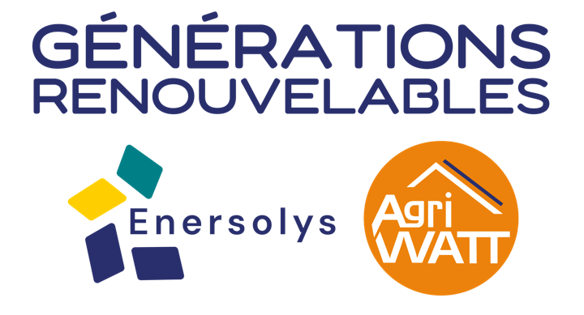

Suivi VMC en schémas

Une seule page web installable, une copie complète des données dans chaque appareil, et un fichier partagé sur SharePoint qui fait autorité. Voici comment les pièces s'emboîtent : où vivent les données, le parcours d'une visite, la synchronisation entre appareils et les échanges avec les autres outils QHSE.
1. Où vit quoi
Le code de l'application est servi par l'hébergement OVH, mais aucune donnée n'y transite. Chaque appareil garde une copie complète dans son navigateur (IndexedDB) et dialogue directement avec SharePoint via Microsoft Graph, avec la session Microsoft 365 de l'utilisateur.
2. Le parcours d'une visite
Une VMC part d'une visite planifiée (un observateur, un mois), devient une VMC réalisée avec sa grille, ses photos et ses signatures, puis alimente les actions, le tableau de bord et les remarques.
- visite : conducteurId, mois, année, datePrevue, statut planifie
- vmc : grille[], scores, photos[], signatures…
- supprimer la VMC remet la visite en planifiée
- action : vmcId, responsable, délai, statut, ncTransmis
visite.vmcId : c'est lui qui fait passer un mois de « planifié » à « réalisé » dans le planning et le tableau de bord. Le PDF est régénéré à chaque enregistrement à partir de la VMC ; il n'est pas la source des données.3. La synchronisation entre appareils
Chaque saisie est d'abord écrite en local, puis poussée vers vmc-data.json au bout d'1,5 s. Avant d'écrire, l'application relit le fichier : si un collègue l'a modifié entre-temps, elle fusionne au lieu d'écraser. Les autres appareils relisent le fichier toutes les 15 s.
_meta et l'ETag SharePoint sont les deux garde-fous : le premier dit qui est en avance, le second empêche deux écritures simultanées. Si le fichier distant est illisible, l'application refuse d'écrire à l'aveugle et réessaie plus tard. Les suppressions locales ne l'emportent jamais sur une modification faite ailleurs.4. Les échanges avec les autres outils
Suivi VMC n'est pas isolé : il lit le référentiel commun alimenté par SuiviPDP, envoie ses écarts à SuiviNC, dépose ses PDF pour Power Automate et produit les invitations et exports que l'on ouvre dans Outlook et Excel.
Shared/referentiels.json est découpé en sections, chacune écrite par une seule application (SuiviPDP pour chantiers et personnel, Suivi VMC pour ses événements) : pas de fusion de contenu, un simple verrou ETag suffit.5. Les fichiers en une table
| Fichier | Contenu | Qui écrit | Quand |
|---|---|---|---|
| vmc-data.json autorité | conducteurs, visites, vmcs, actions, config + _meta {version, lastSaved, savedBy}. Photos sous forme de {id, name, path}. | chaque appareil, avec verrou ETag et fusion 3 sources | 1,5 s après une saisie ; relu toutes les 15 s |
| activity-log.json | {events:[{ts, user, action, details}]} : connexion, sauvegarde, création / modification / suppression, conflits, divergences de version. 5 000 événements max. | chaque appareil (file d'attente, ETag) | 2 s après l'événement |
| .presence/<nom>.json | {user, ts, tab} — sert au bandeau « Également connecté(s) ». | chaque appareil connecté | toutes les 30 s ; périmé après 90 s |
| photos/<vmcId>/<id>.jpg | photos compressées (1 024 px, JPEG) sorties du JSON pour le garder léger ; rechargées à l'affichage et dans le PDF. | l'appareil qui enregistre la VMC | à chaque sauvegarde contenant de nouvelles photos |
| PDF_envois/VMC_Nom_date.pdf | compte rendu complet : en-tête, grille, remarques, actions, photos, signatures. | l'appareil qui enregistre la VMC | à chaque enregistrement du formulaire (surveillé par Power Automate — ne pas y toucher) |
| Shared/referentiels.json commun | sections entreprises, chantiers, personnel, agences, exutoires, events_suivivmc. Suivi VMC lit chantiers et personnel, écrit events_suivivmc. | une application par section | relu au plus toutes les heures ; écrit à la transmission d'un écart |
| IndexedDB (navigateur) local | copie complète des données, instantané de la dernière synchro, drapeau « modifs en attente », cache base64 des photos. | l'application, sur l'appareil | à chaque saisie et à chaque synchro |
| sw.js / index.html code | le shell de l'application ; CACHE_NAME de sw.js donne le numéro de version affiché dans la barre. | GitHub → OVH (FTP au push sur main) | mise à jour au retour au premier plan, rechargement seulement si aucune saisie en cours |
Si une VMC « disparaît » sur un appareil mais reste visible sur un autre, c'est presque toujours que vmc-data.json est devenu inaccessible (dossier déplacé ou supprimé) : chaque appareil continue alors sur sa copie locale. Vérifier la corbeille du site QHSE avant toute autre manipulation, et ne rien enregistrer depuis l'appareil qui a les données périmées.